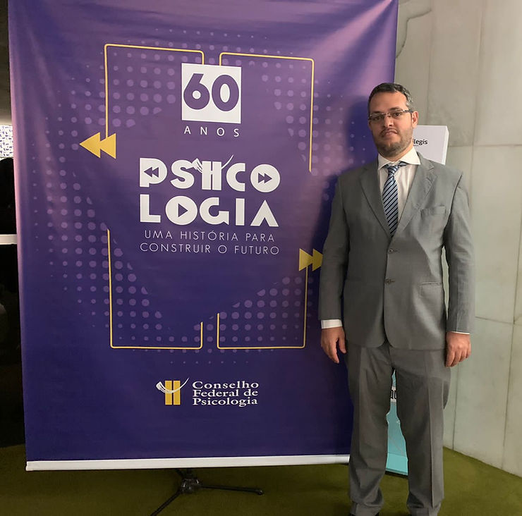
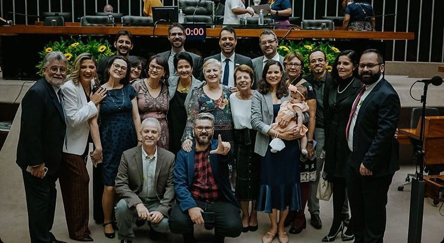
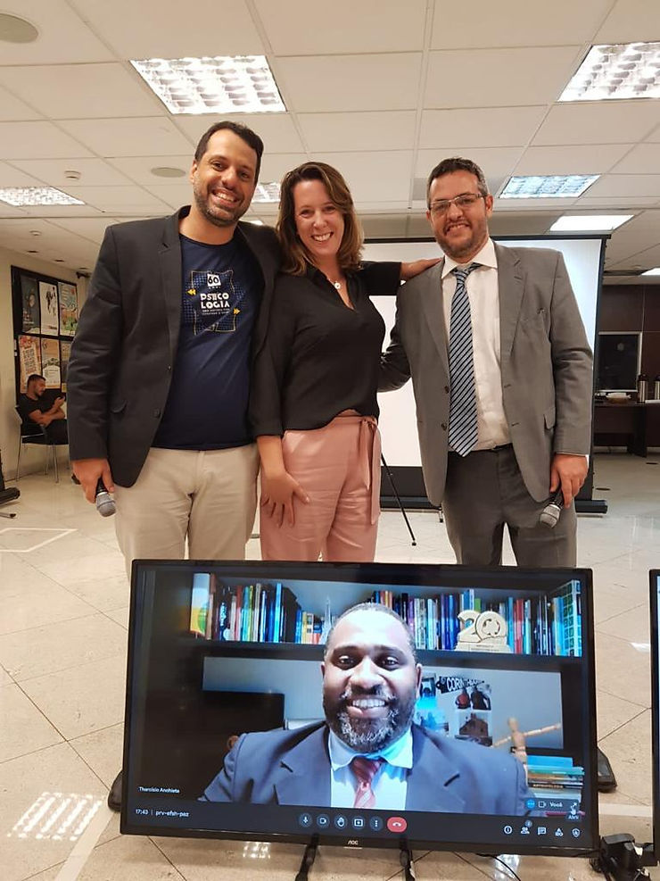

Em 27 de agosto de 1962, o então presidente João Goulart sancionou a Lei 4.119, que tornou a Psicologia uma profissão. A aprovação colocou o Brasil na vanguarda, pois somente Egito, Canadá e Estados Unidos tinham uma legislação regulamentando a profissão de psicólogo.
Entre 9 e 13 de maio o Conselho Federal de Psicologia, produziu uma série de Lives “intensificando a contagem regressiva para os 60 anos de regulamentação”, informa o CFP.
Temas atuais como o enfrentamento ao racismo; Psicologia, gênero, raça e interseccionalidade; violência no trânsito; o luto de crianças e adolescentes durante a pandemia da Covid-19; a luta anticapacitista; o teletrabalho no contexto da atual crise sanitária; e o esporte e o lazer como ferramentas para o desenvolvimento pessoal e social (discussão também relacionada à pandemia) foram discutidos por representantes de entidades convidadas em Lives promovidas pelo CFP. (veja os temas e links das lives no final da matéria)
A ABRAPESP, representada por seu presidente Rodrigo Pieri, participou da live “Atividade física, esporte e lazer como ferramentas para o desenvolvimento pessoal e social em tempos de pandemia”. No debate estiveram presentes o ex-presidente e associado da ABRAPESP Rodrigo Acioli, representando o Conselho Federal de Psicologia; Andrea Pesca representando a Associação Brasileira de Estudos em Psicologia do Esporte e Exercício – ABEPEEx e Tharcisio Anchieta, representante o Conselho Federal de Educação Física – CONFEF.
Os eventos promovidos pelo CFP são fundamentais. Temáticas riquíssimas, que vão pautar os próximos anos da psicologia e que tem uma construção, que tem todo um processo. Esta proposta das comemorações dos 60 anos é uma maneira de respeitar a história da Psicologia. Diz Rodrigo Pieri
Sessão Solene na Câmara dos Deputados

Fechando a semana, as entidades, juntamente com representantes do Sistema Conselhos, parlamentares, autoridades públicas e convidados, participaram de uma sessão solene na Câmara dos Deputados em Homenagem aos 60 Anos da Regulamentação da Psicologia no Brasil, no Plenário Ulysses Guimarães. Rodrigo Pieri representou a ABRAPESP no evento.
A solenidade na Câmara dos Deputados foi requerida pela Deputada Federal Erika Kokay do PT do DF, e transmitida ao vivo pela TV Câmara e pelas redes sociais do Conselho Federal de Psicologia.
A deputada Erika apresentou as contribuições da Psicologia à sociedade brasileira ao longo das últimas seis décadas. Transmitiu os votos e mensagens de seus colegas, e o vídeo da Deputada Federal do PT do RS, Maria do Rosário Nunes, que elogiou o trabalho dos psicólogos nas lutas sociais e a importância da interdisciplinaridade da Psicologia.
No evento, Arnaldo Luiz Marques dos Santos, representando os Correios, lançou o selo comemorativo dos 60 anos, e convidou a presidente Ana Nóbrega, do Conselho Federal de Psicologia, para a primeira obliteração (carimbo do selo).
No final da solenidade, apresentações de poesia e música embalaram a celebração convergente da Psicologia, mostrando ao Brasil a importância de sempre saber que a “nossa luta não é só na Solitária é com outras áreas, outros saberes”, Erika Kokay
Assista a Sessão Solene, em Homenagem aos 60 anos da regulamentação da Psicologia no Brasil, realizada na Câmara dos Deputados, Plenário Ulysses Guimarães
Links das Lives

Live “Atividade física, esporte e lazer como ferramentas para o desenvolvimento pessoal e social em tempos de pandemia”, Dia 13/5
Live “Nada sobre nós sem nós: Por uma Psicologia anticapacitista”,
dia 12/5
Live “Teletrabalho no Brasil antes, durante e pós-pandemia: impactos na saúde do trabalhador”,dia 12/5
Live “Resistência, Direitos Humanos e 60 anos da psicologia”, dia 11/5
Live “O luto e a luta de crianças e adolescentes afetados pela sindemia: órfãos da Covid-19”,dia 11/5
Live “Psicologia, gênero, raça, interseccionalidade”, dia 10/5
Live “Violência no trânsito e direitos humanos”, dia 10/5
Live “Racismo é coisa da minha cabeça ou da sua? – Balanço da Campanha Nacional de Direitos Humanos”, dia 9/5